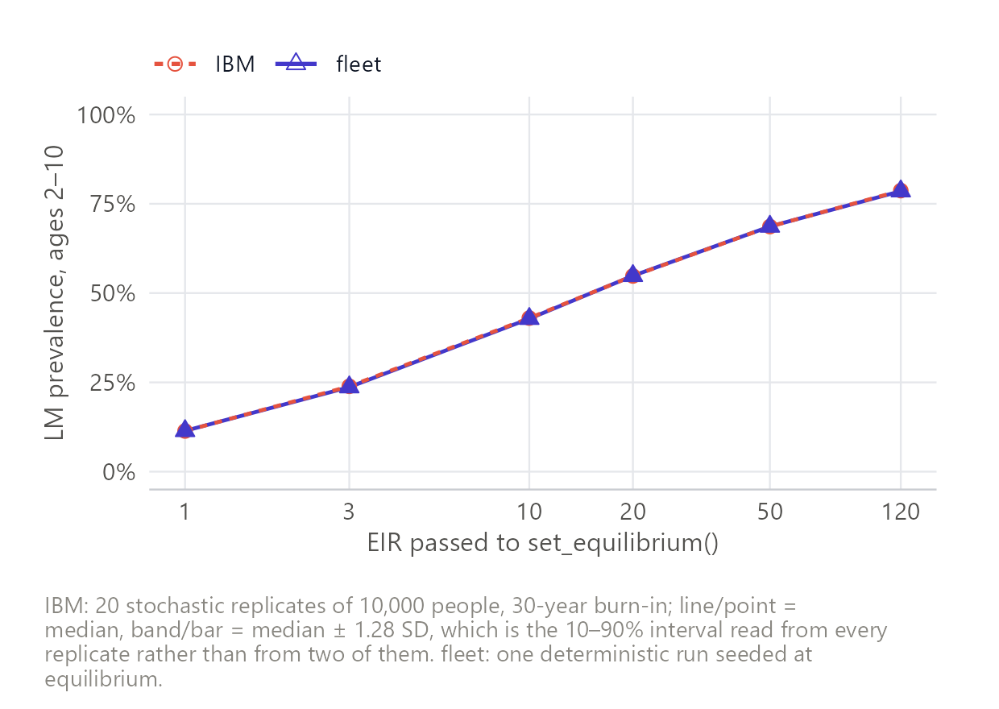
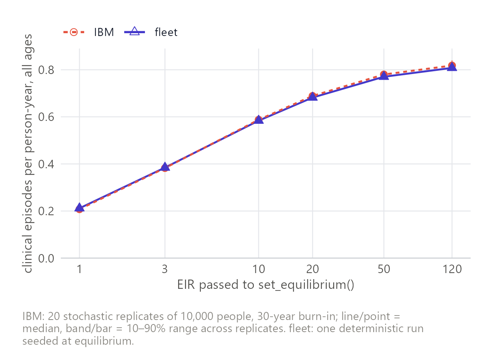
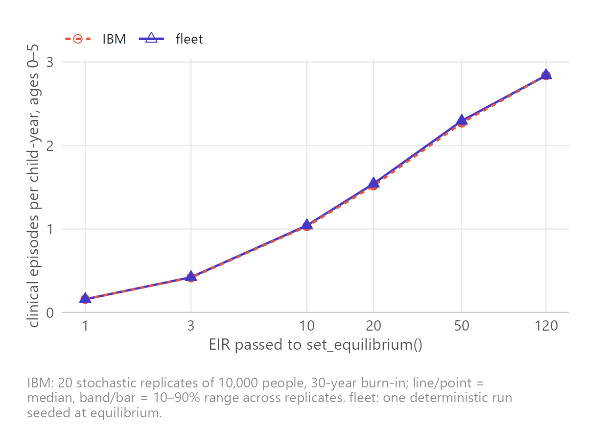
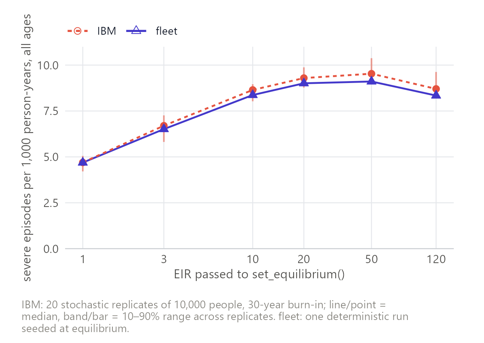
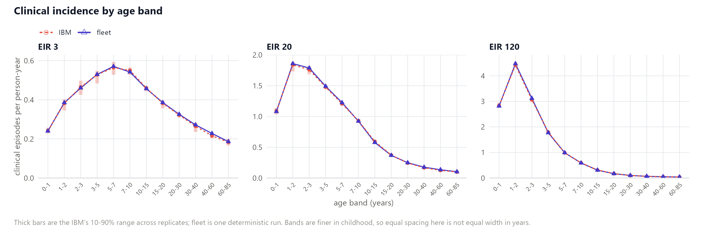
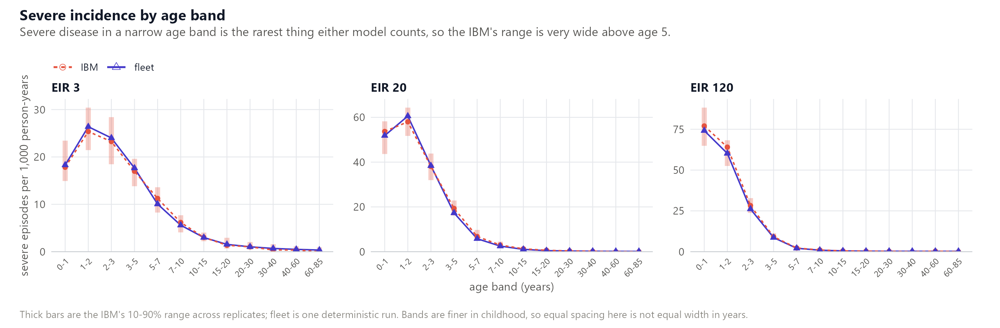
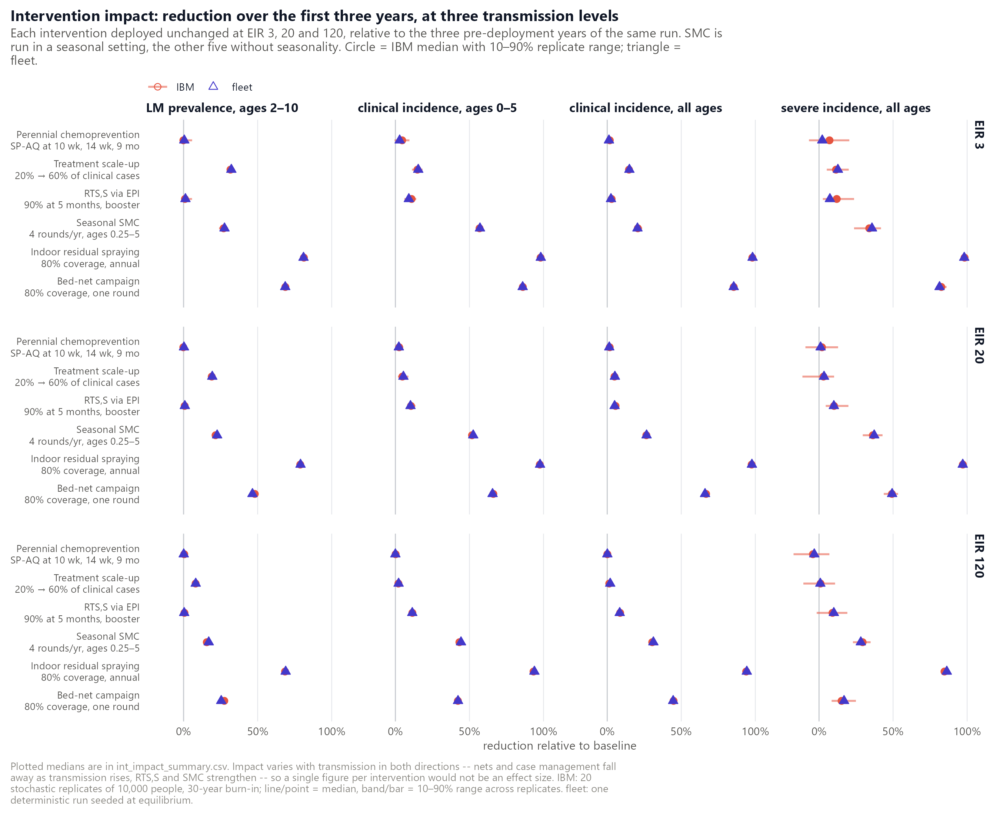
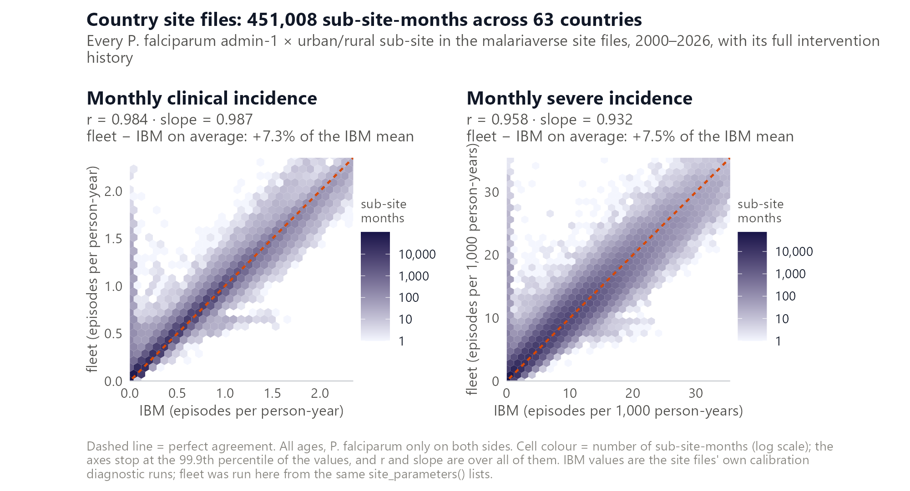
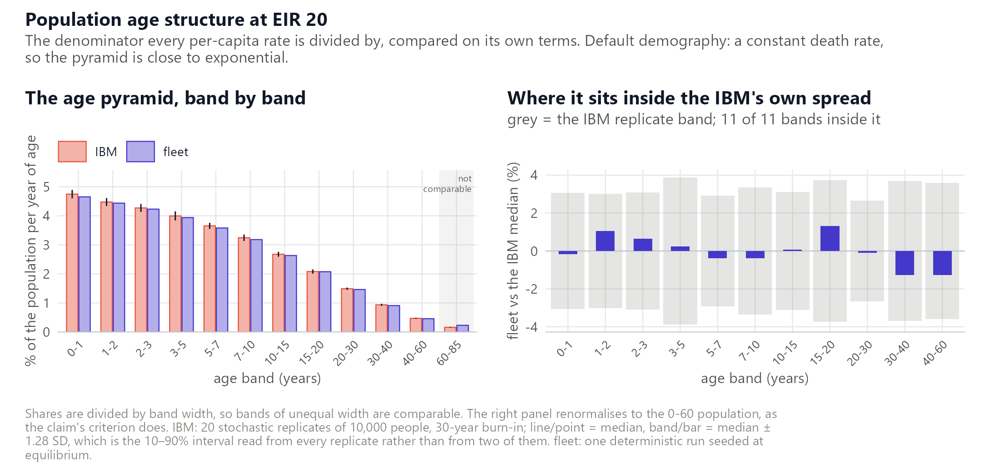

How closely does fleet reproduce
malariasimulation? Each claim below states the criterion
that decides it, the value measured against that criterion, and a
verdict. The order runs from transmission through clinical and severe
burden to their age distributions, then interventions and real settings,
with the demographic, performance and numerical checks that underwrite
them at the end.
Every section is generated from claims.yml, so this page
cannot disagree with the register, and the register cannot be changed
without the page following.
11 claims — 2 failing, 0 untested, 0 open, 9 pass.
| claim | tier | criterion | measured | verdict |
|---|---|---|---|---|
prevalence-eir |
2 | inside the IBM 10-90% replicate band at every EIR on the grid | inside at 6 of 6; largest departure 0.94% of the IBM median | pass |
clinical-allage-eir |
2 | inside the IBM 10-90% replicate band at every EIR on the grid | inside at 6 of 6 | pass |
clinical-under5-eir |
2 | inside the IBM 10-90% replicate band at every EIR on the grid | inside at 6 of 6 | pass |
severe-allage-eir |
2 | inside the IBM 10-90% replicate band at every EIR on the grid | inside at 6 of 6 | pass |
age-profile-clinical |
2 | inside the IBM 10-90% replicate band in every age band, at EIR 3, 20 and 120 | inside at 35 of 36 bands across the three EIRs – 12 of 12 at EIR 3, 11 of 12 at EIR 20, 12 of 12 at EIR 120; largest departure 7.7% of the IBM median | FAIL |
age-profile-severe |
2 | inside the IBM 10-90% replicate band in every age band with non-zero IBM incidence, at EIR 3, 20 and 120 | inside at 31 of 31 bands across the three EIRs; largest departure 83% of the IBM median, in a band an order of magnitude wider than that | pass |
intervention-impact |
2 | within 0.6 percentage points of the IBM replicate band on every outcome, at EIR 3, 20 and 120 (SMC in a seasonal setting, since it is a seasonal intervention) | inside the band on 66 of 72 cells; worst excursion 1.11 percentage points, bed nets at EIR 120 on LM prevalence | FAIL |
real-settings-correlation |
3 | r > 0.95 and |slope - 1| < 0.10 on both clinical and severe incidence | clinical r 0.983 slope 0.996; severe r 0.959 slope 0.929, over 450,684 sub-site-months in 1,391 sub-sites of 63 countries | pass |
population-age-structure |
2 | inside the IBM 10-90% replicate band in every age band below 60 years, on shares renormalised to the 0-60 population | inside at 11 of 11; largest departure 1.3% of the IBM median | pass |
speed |
2 | at least 10x faster than the IBM on the same scenario set | 21x on cost per simulated year; 19.9 CPU-hours for the IBM against 169 s for fleet | pass |
seed-stability |
1 | PfPR(2-10) departs from its seeded value by less than 1% over 15 years at EIR 20 | 0.28% maximum excursion; flat to 0.02% over the last five years | pass |
prevalence-eir
pass — LM prevalence in 2-10 year olds tracks the IBM across transmission intensity.

clinical-allage-eir
pass — All-age clinical incidence tracks the IBM across transmission intensity.

clinical-under5-eir
pass — Under-5 clinical incidence tracks the IBM across transmission intensity.
fleet sits within 1.3% of the IBM median at every EIR on the grid.

severe-allage-eir
pass — All-age severe incidence tracks the IBM across transmission intensity.
fleet sits 2 to 4% below the IBM at every EIR above 1. About -6% of that is age-grid discretisation, which refining removes; the remainder is not resolved. Not a bias to correct for. A band test cannot see an offset repeated at every point. Severe has the widest replicate spread here, 15.4% of the median, which is what sets the twenty-replicate count.

age-profile-clinical
FAIL — The age distribution of clinical incidence tracks the IBM.
One band is outside: 40-60 y at EIR 20, by 7.7%, holding 1.7% of clinical episodes. At EIR 3 and EIR 120 every band is inside. No age grid closes it. Refining drives fleet’s own discretisation error to zero at first order while its departure from the IBM levels off near 4%: the mean field holds one immunity value per stratum where the IBM holds a spread of infection histories at the same age. Measured in validations/age-grid/.

age-profile-severe
pass — The age distribution of severe incidence tracks the IBM.
The claim rests on the bands below age 5, where 88% of severe episodes fall and the IBM’s replicate range is 22% of its median. Above age 30 that range reaches 246%, so agreement there is not evidence of much.

intervention-impact
FAIL — The modelled impact of each intervention matches the IBM.
Agreement is a function of transmission, and only the top of the range fails. At EIR 3 every cell is inside the band; at EIR 20 two are outside by at most 0.36 percentage points; at EIR 120 four are outside and the worst reaches 1.11. Every excursion is vector control or SMC at high transmission, where fleet under-predicts the prevalence impact of nets by 2.1 percentage points – the saturating-hazard regime, where the two models’ biting terms are least alike. Impact is a ratio of two runs sharing an age grid, so grid discretisation divides out: replacing the grid left the worst excursion unchanged. Perennial chemoprevention is the one intervention whose delivery the models cannot share. The IBM doses each child on reaching a dose age; fleet approximates that as monthly pulses over a 30-day band, which doses 8 to 21 days late and overstates the infant benefit by about a tenth. The window is the three years after deployment. Run longer and fleet develops a severe-incidence rebound, -0.5% at EIR 3 to +8% at EIR 120, which these IBM rows are too short and too noisy to test.

real-settings-correlation
pass — Agreement holds across real transmission settings, not just synthetic scenarios.
r and slope test whether fleet tracks the IBM, not whether it sits on top of it. No single excess figure describes the level: it runs from +190% below pf EIR 0.1 to +2.3% above 120, and severe crosses zero at high transmission. 18% of sub-sites sit below EIR 1, outside any tier-2 claim, and that is where the departure lives. Guinea-Bissau is a separate failure: 18 sub-sites at +108% and r 0.635, against 553 peers of the same burden at +11.8% and r 0.991. diagnose.R ranks every sub-site. Monthly, and P. falciparum only on both arms. Annual means once hid a real seasonal mismatch; the shipped diagnostics carry vivax rows that inflate the baseline where pf transmission is low.

population-age-structure
pass — The population age structure matches the IBM’s.
The 0-60 restriction is a rendering convention, not a model difference: fleet’s oldest group is absorbing and open-ended above 80, and the renderer assigns it wholly to the band containing its lower edge, so fleet’s 60-85 share is 41% higher by construction. Agreement at this level depends on the ageing rate being exponentially fitted, r = mu/expm1(mu*width), exact at the seed and an approximation under time-varying demography. Separately: maternal immunity is drawn from the group containing age 20, which is 20-22.5 here against the IBM’s 20-21, so infants start with about 6.7% too much. Known, not yet fixed.

speed
pass — fleet is fast enough to be worth using in place of the IBM.
No figure: this claim is a single number rather than a relationship across a range, and a chart of one number carries less than the number.
seed-stability
pass — An undisturbed run holds the equilibrium it was seeded at.
The one claim here whose measured value no script in this repository reproduces: validations/01-seed-stability/ is a stub. The figure comes from a run made outside it, which is the arrangement the rest of the register exists to avoid.
No figure: this claim is a single number rather than a relationship across a range, and a chart of one number carries less than the number.
What “tier” means
What it costs to reproduce a result is a property of that result, so it is recorded against every claim rather than stated once in prose.
| tier | cost | who can reproduce it |
|---|---|---|
| 0 | seconds | anyone, from the committed summaries |
| 1 | ~2 min | anyone; re-runs fleet only |
| 2 | ~2 h | anyone with about ten cores |
| 3 | ~40 min | about ten cores, and inputs that are not redistributable |
Tier 3 is the 63-country site-file comparison. Its figures
and statistics are public; the site files behind them are not.
The constraint is the inputs rather than the compute: the sweep re-runs
fleet only, because the IBM arm is the pre-run diagnostic
shipped with each site file, so forty minutes on ten cores refreshes it.
But the site files are not redistributable, so nobody outside the
project can repeat it. That is a limitation of this evidence, not a
property of the result, and
validations/03-real-settings/example-one-site.R runs the
same pipeline on a single sub-site for anyone who has one site file.